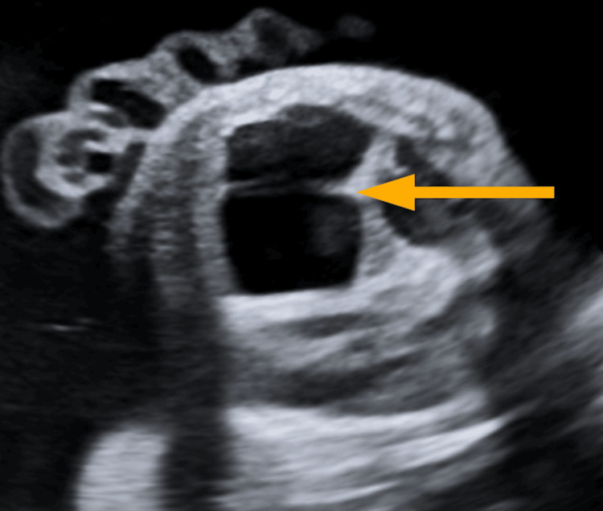
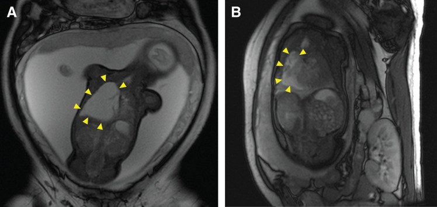
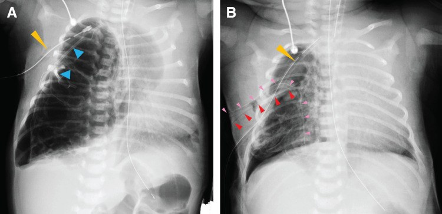
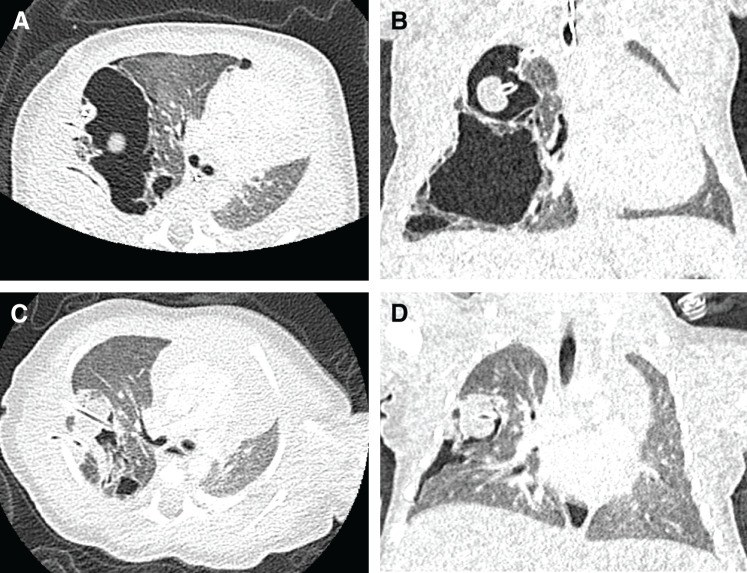

698 — Nang phổi bẩm sinh CPAM/CCAM & bóng khí bẩm sinh: Stocker, CVR và quyết định mổ hay theo dõi
Tags: pattern:nang-phoi pattern:bong-khi vung:phoi protocol:MRI-thai protocol:CT-nguc-nhi score:CVR incidentaloma:nang-phoi-thai
Mức chắc chắn (certainty): tổng hợp y văn (literature synthesis) — tự biên từ bài tổng quan + ca nguyên văn mở 2024–2026 (PMC11201397, PMC13534148, PMC13275188, PMC12960765, PMC13121396); phần quiz dùng ca nguyên văn của Okumura 2026 và Sathian 2026 (ghi rõ nguồn từng ảnh).
1. Tổng quan bệnh học – cơ chế hình ảnh
Định nghĩa: dị dạng đường thở phổi bẩm sinh (congenital pulmonary airway malformation — CPAM), tên cũ CCAM, là tổn thương hamartoma do tăng sinh hỗn loạn các tiểu phế quản tận, tạo các khoang nang có thông với cây phế quản và cấp máu từ động mạch phổi (khác phổi phụ/sequestration: cấp máu từ động mạch hệ thống) (PMC11201397, PMC13534148). Tên CPAM được ưu tiên vì tổn thương chỉ dạng nang ở 3/5 thể và chỉ "adenomatoid" ở thể 3 (PMC11201397).
Dịch tễ: CPAM là dị dạng phổi bẩm sinh hay gặp nhất; tỉ lệ 1/7.200 ca sinh trong nghiên cứu tiến cứu gần đây (ước tính cũ 1/11.000–1/35.000) (PMC13534148); dị dạng phổi bẩm sinh nói chung chiếm 5–18% các dị tật bẩm sinh (PMC11201397).
Sinh bệnh học: tắc nghẽn đường thở trong tử cung (nguyên phát hoặc thứ phát) → giãn và loạn sản phổi phía dưới chỗ tắc; bằng chứng: hẹp phế quản bẩm sinh (bronchial atresia) có mặt ở 70% ca CPAM và 82% ca sequestration trong lòng thùy — CPAM, sequestration, hẹp phế quản, khí phế thũng thùy bẩm sinh là một "continuum" của loạn sản phổi (PMC11201397). Yếu tố phân tử: FGF10 tăng tín hiệu, DICER1 đột biến gây nang đường thở giống PPB, KRAS ở CPAM type 1 có tăng sinh nhầy (PMC11201397).
Phân loại Stocker (5 thể) — ngưỡng kích thước nang là chốt hình ảnh (bảng 1 của PMC11201397):
- Thể 0 — 2%, phát sinh từ khí–phế quản: loạn sản phế nang, không sống được.
- Thể 1 — 60–65%, phát sinh từ phế quản: nang lớn 2–10 cm (một hoặc vài nang), có nang nhỏ quanh.
- Thể 2 — 10–40%, phát sinh từ tiểu phế quản: nhiều nang nhỏ 0,5–2 cm; hay kèm dị tật tim–thận.
- Thể 3 — 5–10%, phát sinh từ ống phế nang: vi nang < 5 mm, trông như khối đặc ("adenomatoid").
- Thể 4 — 10–15%, phát sinh từ nang tận: nang lớn > 10 cm ở ngoại vi thùy — không phân biệt được với PPB type I trên hình ảnh.
TẠI SAO hình ảnh thay đổi theo thời gian (vật lý): trong tử cung và vài giờ đầu sau sinh, nang chứa dịch phổi thai → trên X-quang là đám mờ đặc (dễ nhầm viêm phổi/tràn dịch). Khi dịch được thay bằng khí, tổn thương thành các khoang sáng (≈ −1.000 HU) với thành mỏng; nếu bội nhiễm → mức khí–dịch và thành dày. Trên MRI: nang toàn khí = tín hiệu rất thấp mọi chuỗi xung; nang chứa dịch = tăng tín hiệu trên T2 (PMC11201397).
Ngưỡng định lượng bắt buộc:
- CVR (CPAM volume ratio) = 0,52 × dài × rộng × cao (cm) / chu vi đầu (cm). CVR > 1,6 dự báo nguy cơ phù thai (hydrops fetalis) và biến chứng sơ sinh; CVR < 0,9–1,6 tiên lượng thuận lợi: nguy cơ phù < 3%, sống 94%; CVR ≥ 0,84 dự báo suy hô hấp lúc sinh (PMC11201397, PMC13534148, PMC12960765).
- Phân loại Adzick theo siêu âm: macrocystic = nang ≥ 5 mm; microcystic = nang < 5 mm, phổi tăng hồi âm đặc (PMC13601915).
- Phù thai xảy ra ở 3–5% ca CPAM tiền sản; > 75% trẻ sinh ra không triệu chứng; 18,5% tổn thương thoái triển hoàn toàn trong tử cung (PMC11201397, PMC13534148).
- Nguy cơ ác tính 2–4%; PPB (pleuropulmonary blastoma) có tỉ lệ 1/250.000 ca sinh và ~4% ở trẻ có CPAM; 2/3 ca PPB mang đột biến DICER1 dòng mầm (PMC11201397, PMC13534148).
- Người lớn: 74,4% có triệu chứng, > 30% viêm hô hấp tái diễn, 11,7% tổn thương chứa u khi mổ, CPAM liên quan u phổi > 20% (PMC11963009).
2. Mẫu hình + chẩn đoán phân biệt theo vị trí (gamut)
- Mẫu hình tiền sản (siêu âm): khối tăng hồi âm hoặc đa nang trong lồng ngực thai, một bên, ưu thế thùy dưới; kèm đẩy trung thất, đa ối (do chèn ép thực quản), tràn dịch màng phổi, phù thai (PMC12960765).
- Mẫu hình sau sinh (X-quang): đám mờ đặc một bên/một thùy ở giờ đầu (dịch còn trong nang) → khối nang sáng với thành mỏng, có thể đẩy trung thất, xẹp phổi lành, hoặc tràn khí màng phổi áp lực khi nang vỡ (PMC13275188).
- Mẫu hình CT: nang trong một thùy, kích thước đồng nhất theo thể (type 1 nang lớn, type 2 nhiều nang nhỏ, type 3 đặc/vi nang, type 4 nang lớn ngoại vi); không có cấp máu hệ thống (nếu có → hybrid lesion CPAM + sequestration) (PMC11201397).
- Gamut theo vị trí & cơ chế:
- Trong nhu mô, một thùy: CPAM (có thông phế quản, mạch phổi), sequestration trong thùy (intralobar) (mạch hệ thống), hẹp phế quản bẩm sinh (nang nhầy trung tâm + vùng phổi tăng sáng phía dưới).
- Trung thất/ngoài nhu mô: nang phế quản (bronchogenic cyst) — một ổ, thành rõ, thường cạnh carina; sequestration ngoài thùy (extralobar) — khối đặc, mạch hệ thống, hay kèm dị tật khác.
- Cả thùy tăng sáng: khí phế thũng thùy bẩm sinh (congenital lobar hyperinflation/emphysema) — thùy căng giãn, mạch máu thưa và bị đẩy, không có thành nang rời; hay gặp thùy trên trái (42,2%) (PMC11201397).
- Lồng ngực chứa tạng: thoát vị hoành bẩm sinh (CDH) — quai ruột trong ngực, trung thất đẩy, không có thành nang.
- Nang mắc phải: nang sau viêm/nang khí (pneumatocele), áp-xe phổi, bệnh nang lan toả (LAM, PLCH, BHD — bài 697) — hai bên, nhiều thùy.
- Mnemonic "CYST": CPAM, Young age (tiền sản/sơ sinh), Systemic artery (→ sequestration), Thùy đơn (đơn ổ).
3. Bảng so sánh phân biệt (ma trận đối chiếu)
| Thực thể (entity) | Hình ảnh điển hình | Chốt vào (rule-in) | Chốt loại (rule-out) | Gợi ý xác nhận |
|---|---|---|---|---|
| CPAM type 1 | Nang lớn 2–10 cm trong một thùy, thành mỏng, có thể mức khí–dịch; 60–65% ca | Nang lớn đơn ổ hoặc vài nang + một thùy + phát hiện tiền sản | Nang hai bên nhiều thùy → bệnh nang lan toả; mạch hệ thống nuôi tổn thương → sequestration | CT ngực có cản quang; mô bệnh học sau cắt thùy |
| CPAM type 2 | Nhiều nang nhỏ 0,5–2 cm, có thể kèm đám đặc; hay kèm dị tật tim–thận | Đa nang nhỏ đồng đều trong một thùy + dị tật phối hợp | Nang lớn đơn thuần → type 1 | CT + siêu âm tim/thận |
| CPAM type 3 | Vi nang < 5 mm, trông như khối đặc, tăng hồi âm trên siêu âm | Khối "đặc" một thùy ở sơ sinh + vi nang trên CT lát mỏng | Khối đặc thật (u, sequestration) → cần cản quang/mô bệnh | CT lát mỏng, mô bệnh |
| CPAM type 4 / PPB type I | Nang lớn > 10 cm ngoại vi, thành mỏng; không phân biệt được trên hình ảnh | Nang lớn + tràn khí + tổn thương hai bên/nhiều thùy + DICER1 → nghi PPB | Nang một thùy đơn thuần ở trẻ không triệu chứng → CPAM | Bắt buộc mô bệnh học; xét nghiệm DICER1 |
| Sequestration (trong/ngoài thùy) | Khối đặc hoặc nang, mạch máu hệ thống từ động mạch chủ | Thấy động mạch hệ thống nuôi tổn thương trên CTA/MRI | Mạch nuôi từ động mạch phổi → CPAM | CTA ngực, MRI, siêu âm Doppler tiền sản |
| Khí phế thũng thùy bẩm sinh | Cả thùy tăng sáng, căng giãn, mạch thưa và bị đẩy; không thành nang rời | Thùy căng + mạch máu thưa, đẩy trung thất | Nhiều nang có thành rõ → CPAM | X-quang, CT thì hít vào/thở ra |
| Nang phế quản | Một ổ, thành rõ, thường cạnh carina/trung thất, có thể chèn ép | Nang đơn độc trung thất, không nhu mô phổi | Nang trong nhu mô, nhiều ổ → CPAM | CT/MRI trung thất, mô bệnh |
| Thoát vị hoành bẩm sinh | Quai ruột trong ngực, trung thất đẩy mạnh, phổi xẹp | Thấy ruột/dạ dày trong lồng ngực | Không có quai ruột → loại CDH | X-quang bụng–ngực, siêu âm |

Siêu âm thai: tổn thương macrocystic (nang lớn ≥ 5 mm) trong lồng ngực thai — mũi tên vàng. Nguồn: Sathian S et al., Cureus 2026 (PMC12960765) Fig. 1, CC BY 4.0.4. Protocol chụp + hệ phân độ/điểm chuẩn hoá
- Tiền sản:
- Siêu âm thai là tuyến đầu: đo kích thước 3 chiều tổn thương → tính CVR, đánh giá đẩy trung thất, tràn dịch, đa ối, phù thai; lặp mỗi 2–3 tuần (PMC13534148, PMC12960765). Tổn thương thường tăng đến tuần 20–26, chững lại ~tuần 29 rồi có thể thoái triển (PMC13534148).
- MRI thai (không cản quang, chuỗi T2 nhanh) khi cần xác định vị trí/thể tích, mạch máu bất thường, hoặc phù thai (PMC13275188).
- Phân tầng nguy cơ theo CVR: < 0,9–1,6** → theo dõi, sinh tại trung tâm có ngoại nhi; **> 1,6 → nguy cơ phù thai cao, hội chẩn can thiệp bào thai.
- Can thiệp bào thai: betamethasone 12 mg × 2 liều trước 32 tuần cho thể microcystic hoặc CVR > 1,6; đặt shunt lồng ngực–màng ối (TAS) cho thể macrocystic có phù thai/tràn dịch lớn (PMC12960765, PMC13275188).
- Sau sinh:
- X-quang ngực + siêu âm trong 24 giờ đầu cho mọi trẻ có chẩn đoán tiền sản (PMC13534148).
- CT ngực có cản quang, lát mỏng, liều theo cân nặng ở 3–6 tháng tuổi (trẻ không triệu chứng) hoặc ngay khi có triệu chứng, để xác định thùy tổn thương, mạch nuôi, loại trừ sequestration và lập kế hoạch mổ (PMC13534148, PMC11201397). ALARA: giảm kVp/mAs theo tuổi–cân nặng, không chụp lặp không cần thiết.
- Mổ: cắt thùy nội soi (VATS) là ưu tiên; tuổi mổ trung vị 5,5 tháng (4–8) trong loạt 20 ca, 75% mổ nội soi, biến chứng hậu phẫu 25% (nhiễm vết mổ, tràn khí, thủng thực quản), không tử vong (PMC13534148). Mổ nội soi giảm thời gian nằm viện và biến chứng so với mở ngực (PMC13121396).
- Theo dõi bảo tồn chỉ nên là lựa chọn có giám sát (CT định kỳ) và đã tư vấn đầy đủ nguy cơ nhiễm trùng/ác tính; trong loạt trên, 2 trẻ không mổ vẫn không triệu chứng sau 9 và 24 tháng (PMC13534148).
- Sơ đồ quyết định (tiền sản → sau sinh):
flowchart TD
A[Thai có khối nang phổi một bên] --> B[Tính CVR = 0,52 x dai x rong x cao / chu vi dau]
B --> C{CVR > 1,6 hoặc có phù thai?}
C -->|Có| D{Thể macrocystic có tràn dịch lớn?}
D -->|Có| E[Đặt shunt lồng ngực–màng ối TAS + hội chẩn]
D -->|Không| F[Betamethasone 12 mg x 2 trước 32 tuần + theo dõi sát]
C -->|Không| G[Theo dõi siêu âm mỗi 2–3 tuần, sinh tại trung tâm có ngoại nhi]
E --> H[Sinh]
F --> H
G --> H
H --> I[X-quang + siêu âm trong 24 giờ]
I --> J{Có suy hô hấp hoặc tràn khí áp lực?}
J -->|Có| K[Dẫn lưu khẩn cấp rồi CT sớm]
J -->|Không| L[CT ngực có cản quang lúc 3–6 tháng]
K --> M[CT xác định thùy và mạch nuôi]
L --> N[Hội chẩn ngoại nhi: VATS cắt thùy]
M --> N
N --> O[Mô bệnh học: phân thể Stocker, loại trừ PPB type I]
5. Biến thể bình thường và cạm bẫy
- "Thoái triển" trên siêu âm ≠ hết bệnh: tổn thương không thấy trên X-quang sau sinh vẫn có thể thấy trên CT; bắt buộc CT trước khi kết luận thoái triển (PMC13534148).
- X-quang giờ đầu có thể chỉ là đám mờ đặc (nang còn đầy dịch phổi thai) → dễ chẩn đoán nhầm viêm phổi bẩm sinh/tràn dịch; nếu trẻ không đáp ứng kháng sinh, chụp lại sau 24–48 giờ sẽ thấy nang sáng.
- Type 4 CPAM vs PPB type I — cạm bẫy chết người: manh mối nghi PPB: triệu chứng (đặc biệt tràn khí màng phổi), tổn thương hai bên/nhiều thùy, nang phức tạp, đột biến DICER1; bắt buộc mô bệnh học và theo dõi dài hạn, không được coi là "CPAM lành" (PMC11201397).
- Đừng bỏ sót mạch hệ thống: mọi "CPAM" trước mổ cần CTA/MRI để loại sequestration/hybrid — ảnh hưởng kỹ thuật mổ (kiểm soát động mạch hệ thống).
- Đo CVR sai: đo đường kính lớn nhất 3 chiều và chu vi đầu thai, không đo trên mặt cắt không chuẩn; CVR có thể tăng vọt (ca nguyên văn: 2,0 → 2,46 → sau TAS 1,06) (PMC13275188).
- Tràn khí áp lực ở sơ sinh có CPAM: khi trẻ đột ngột xấu, ưu tiên giải áp trước khi chụp CT — ca nguyên văn có PaCO₂ > 100 mmHg, pH 6,8 và cứu được bằng dẫn lưu nang + dẫn lưu màng phổi (PMC13275188).
- Không nhầm với bệnh nang lan toả: nang hai bên, nhiều thùy ở trẻ lớn/người lớn không phải CPAM — nghĩ BHD (bài 697), LAM, PLCH, LIP.
6. Tự lượng giá — Blind Quiz
Ca 1 — Thai 33 tuần, siêu âm thấy khối đa nang lớn ở ngực phải, đa ối (AFI 37 cm). Ảnh dưới đây thuộc thể nào?
- Gợi ý lâm sàng: thai 33 tuần, đa ối, đẩy trung thất; chưa phù thai.
- Câu hỏi: thể macrocystic hay microcystic? Cần đo gì để phân tầng nguy cơ? Ngưỡng nào khiến phải can thiệp?
Bấm để hiện đáp án (findings + chẩn đoán)
- Dấu hiệu: nhiều khoang trống âm lớn (≥ 5 mm) trong lồng ngực thai, đẩy trung thất sang bên — thể macrocystic.
- Số liệu ca này: thể tích tổn thương 78 mL, CVR 2,5 rồi 2,8 — nhóm nguy cơ cao phù thai; trẻ sinh 33 tuần, 2,4 kg, suy hô hấp, mổ cắt thùy phổi phải ngày thứ 9.
- Ngưỡng: CVR > 1,6 = nguy cơ phù thai/biến chứng; CVR < 0,9 tiên lượng thuận lợi; CVR ≥ 0,84 dự báo suy hô hấp lúc sinh.
- Nguồn ảnh: Sathian S et al., Cureus 2026 (PMC12960765) Fig. 1, CC BY 4.0.
Ca 2 — Thai 20 tuần 4 ngày: MRI thai dưới đây. Trung thất bị đẩy nhiều, CVR = 2,0. Bước tiếp theo?

- Gợi ý lâm sàng: chưa phù thai, chưa suy tim thai; theo dõi nhiều tuần.
- Câu hỏi: mô tả tổn thương? Vì sao CVR quan trọng hơn kích thước tuyệt đối? Can thiệp gì khi CVR tăng tiếp?
Bấm để hiện đáp án (findings + chẩn đoán)
- Dấu hiệu: khối macrocystic lớn chiếm lồng ngực phải, đẩy trung thất sang trái (mũi tên vàng) — hình B là sau can thiệp, nang bớt căng, CVR giảm còn 1,06.
- Diễn tiến ca này: CVR 2,0 (20 tuần) → chọc hút 30 mL nhưng CVR tăng lại → 2,46 (30 tuần) → đặt TAS 31 tuần (4 ống, 1 hoạt động) → CVR 1,06 (36 tuần) → mổ lấy thai 38 tuần.
- Vì sao CVR: chuẩn hoá theo chu vi đầu thai nên phản ánh mức chèn ép tương đối và dự báo phù thai tốt hơn kích thước tuyệt đối.
- Ngưỡng can thiệp: CVR > 1,6 hoặc có phù thai → TAS (macrocystic) hoặc betamethasone 12 mg × 2 (microcystic).
- Nguồn ảnh: Okumura K et al., Surgical Case Reports 2026 (PMC13275188) Fig. 1, CC BY 4.0.
Ca 3 — Sơ sinh sau sinh mổ 38 tuần đột ngột suy hô hấp; X-quang dưới đây. Làm gì ngay?

- Gợi ý lâm sàng: khí máu PaCO₂ > 100 mmHg, pH 6,8; trước đó đã có chẩn đoán CPAM macrocystic.
- Câu hỏi: hai bất thường chính trên phim? Vì sao không chờ CT? Sau giải áp, CT cho thấy gì?
Bấm để hiện đáp án (findings + chẩn đoán)
- Dấu hiệu: nang lớn căng thêm + đẩy trung thất rất mạnh sang trái; có ống dẫn lưu màng phổi (mũi tên cam) và ống TAS (mũi tên xanh); hình B sau khi đặt thêm hai ống dẫn lưu vào nang (mũi tên đỏ/hồng) → nang xẹp, trung thất về gần giữa.
- Chẩn đoán: CPAM macrocystic biến chứng tràn khí áp lực/căng nang — xử trí: giải áp ngay (chọc/dẫn lưu nang + màng phổi, áp lực hút −5 cmH₂O) rồi mới CT; ca này rút ống nội khí quản ngày thứ 8, cắt thùy sau đó.
- Đối chiếu CT sau dẫn lưu:

- CT cho thấy nang giảm thể tích rõ, phổi lành nở lại, trung thất còn lệch nhẹ — đủ thông tin để lập kế hoạch cắt thùy nội soi.
- Nguồn ảnh: Okumura K et al., Surgical Case Reports 2026 (PMC13275188) Fig. 2 và Fig. 3, CC BY 4.0.
Bài liên quan chéo
- 697 – Hội chứng Birt–Hogg–Dubé (FLCN) (nang phổi hai bên ở người lớn — đối cực với nang một thùy bẩm sinh)
- 601 – Tràn khí màng phổi tự phát ở trẻ lớn & vị thành niên (bóng khí, ngưỡng tái phát, VATS)
- 610 – Suy hô hấp sơ sinh & dị dạng phổi
- 621 – Nang sán lá phổi ở trẻ (nang phổi mắc phải — DDx nhiễm trùng)
- 606 – Bệnh phổi mạn ở trẻ sinh non (BPD) (bệnh phổi mạn tính ở trẻ — khác nang bẩm sinh)
Ảnh
- Tên file theo quy ước
NNN_slug_Modality_SourceID.jpg; nguồn + giấy phép từng ảnh ởimages/CREDITS.md. - Cả 4 ảnh CC BY 4.0, không crop, giữ nguyên mũi tên đánh dấu của tác giả.
Không dùng để chẩn đoán độc lập khi chưa có người hướng dẫn.